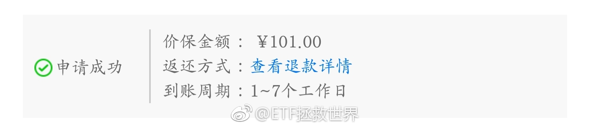

回复@硕仔满:巴洛克也好，歌特又或者维多利亚也好，都挺美。中国的传统风格也非常美。美不仅是流行，更是经典。@ETF拯救世界:不知道你有没有感受，我们好像非常缺乏对“美”的认知。无论是建筑，城市规划和景观设计，各种产品的工业设计，甚至各地新修建寺庙里面的雕像，再到大街上店家的招牌，人们的穿着，超市门口摇摇车的造型…到处都体现一种迷样的审美。
回复@一个风向:我第一套房子上过装修杂志。现在没心气儿也没精力拍了//@一个风向:不用说那些大的，就看看家里的装修就知道大概了，E打装修完了晒图吗@ETF拯救世界:不知道你有没有感受，我们好像非常缺乏对“美”的认知。无论是建筑，城市规划和景观设计，各种产品的工业设计，甚至各地新修建寺庙里面的雕像，再到大街上店家的招牌，人们的穿着，超市门口摇摇车的造型…到处都体现一种迷样的审美。
不知道你有没有感受，我们好像非常缺乏对“美”的认知。无论是建筑，城市规划和景观设计，各种产品的工业设计，甚至各地新修建寺庙里面的雕像，再到大街上店家的招牌，人们的穿着，超市门口摇摇车的造型…到处都体现一种迷样的审美。
老歌好听是因为80 90年代大部分是翻唱日本流行音乐。日本人的旋律非常在线。//@八大山债人:我娃和我一起听周华健。。。//@乐音悦酒: 回复@期货实盘志:你儿子00后？//@期货实盘志:文艺这几年衰败的很厉害，国内几乎没有创作歌手了，我儿子00后都觉得80-90年代那些老歌好听。@虎嗅APP:【中年人没有#996#】林琴所在的公司，不单单是管理岗，公司早就停掉了35岁以上候选人的招聘。确切地说，她们的候选人都在32岁以下，因为目前劳动合同通常一次性签三年，32岁的人再干3年正好满35岁，合同到期后企业可以选择解约。但目前35岁的候选人如果签3年合同，到期时候选人就已经38岁了，严重超纲。按照年龄推算，目前在35门槛上徘徊的是1985年左右出生的人，如果红线设定在32岁，对标的是1988年左右出生的人。而目前风华正茂的90后也已经有人走到了30岁的关头。网页链接 （@全天候科技 ）
到了 评论配图@ETF拯救世界:今天上京东，发现前几天买的一个小东西降价了。随手点了保价，二十秒后处理完成。现在等退款。这种体验非常好。总让我想起当年在中关村买电脑的痛苦经历。以后我的快递都会尽量交给京东发。 
回复@我又又又又改网名了:想发，但今天有可能大涨，我择一下时//@我又又又又改网名了:15号了，今天有车么//@ETF拯救世界:回复@小倪3070:关注我的人里面，所在地依次是北京 广东 上海 浙江 江苏…一线二线应该占了70%以上。关注这个领域的人，都是有点家底有点闲钱的。手头太紧也没功夫想理财的事@ETF拯救世界:有个问题，问问关注我的，工作也是996的朋友：你们，或者说你的家人996，年收入到底是多少。
回复@阿笨的微博:事实证明多刷我的微博有好报…//@阿笨的微博:感谢E大，刚去看了最近买的东西，一共3件退回240，可以带女儿去吃顿牛排了@ETF拯救世界:今天上京东，发现前几天买的一个小东西降价了。随手点了保价，二十秒后处理完成。现在等退款。这种体验非常好。总让我想起当年在中关村买电脑的痛苦经历。以后我的快递都会尽量交给京东发。
回复@小倪3070:关注我的人里面，所在地依次是北京 广东 上海 浙江 江苏…一线二线应该占了70%以上。关注这个领域的人，都是有点家底有点闲钱的。手头太紧也没功夫想理财的事//@小倪3070:基本上还是一些经济发达城市的发言，二线以下基本没什么声音@ETF拯救世界:有个问题，问问关注我的，工作也是996的朋友：你们，或者说你的家人996，年收入到底是多少。